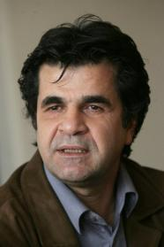

پذيرش > اخبار > سکوت دادگاه جعفرپناهی وتاخیردرصدور رای پس از سه ماه ونیم: بلاتکلیفی، ممنوعیت سفر و (...)


 سکوت دادگاه جعفرپناهی وتاخیردرصدور رای پس از سه ماه ونیم: بلاتکلیفی، ممنوعیت سفر و فعالیت های حرفه ای ادامه دارد سکوت دادگاه جعفرپناهی وتاخیردرصدور رای پس از سه ماه ونیم: بلاتکلیفی، ممنوعیت سفر و فعالیت های حرفه ای ادامه دارد
10 اردیبهشت 1390 - - نسخه قابل چاپ
کمپین بین المللی حقوق بشر در ایران: یک منبع نزدیک به پرونده جعفر پناهی به کمپین بین المللی حقوق بشردر ایران گفت علیرغم آنکه گفته شده بود پس از تسلیم لایحه تجدیدنظر حکم جعفر پناهی فیلمسازجهانی ایران تا ۱۵ روز پس از ان حکم نهایی اعلام خواهد شد، با گذشت سه ماه و نیم از زمان تحویل این لایحه هنوز دادگاه رای خود را اعلام نکرده است. منبع نزدیک به پرونده جعفر پناهی به کمپین گفت که این هنرمند طی ماه های گذشته عملا به دلیل بی تکلیفی از ادامه کار خود محروم بوده است. در اسفند ماه گذشته آقای پناهی فیلمنامه ای از خود را ارائه کرده که اجازه کار به وی داده نشده است.
به جعفرپناهی و وکلایش گفته شده بود که ۱۵ روز پس از تسلیم لایحه تجدیدنظر حکم شعبه ۵۴ دادگاه انقلاب اعلام خواهد شد. اما هم اکنون بیش از سه ماه و نیم از آن زمان می گذرد و دادگاه همچنان در خصوص اعلام رای سکوت و تاخیر می کند. این درحالی است که بیش از ۱۹ ماه است که پاسپورت جعفر پناهی توسط مسولان امنیتی ضبط شده است و وی از سفر کردن برای شرکت در جشنواره های مختلف محروم است.
منبع یاد شده به کمپین گفت که به نظر می رسد درخصوص اینکه چه برخوردی با پرونده جعفرپناهی بشود اختلاف نظر درمیان مسوولان اطلاعاتی است. نشانه های مختلف حاکی از آن است که بخشی از دستگاه های اطلاعاتی تمایل دارد هر چند برای کوتاه مدت هم که شده است این هنرمند سرشناس را به زندان بفرستد. در مقابل عده ای در میان دستگاه قضایی می دانند که با توجه به محتویات پرونده، ومحدودیت های غیرقانونی که برای آقای پناهی درست شده است و واکنش های بی سابقه بین المللی در محکوم کردن حکم زندان و ممنوعیت کار وی ترجیحا بهتر است که وی در حالت بلاتکلیفی قرار داشته باشد.
به تعویق افتادن حکم پرونده های امنیتی- سیاسی در ایران موضوع کم سابقه ای نیست. فاصله بین اعلام دادگاه بدوی تا اعلام رای دادگاه تجدید نظر در برخی پرونده ها تا ۷ سال نیز طول کشیده است. معلوم نیست که آیا مسوولین قضایی- امنیتی می خواهند که این هنرمند باسابقه وبین المللی را مدتها در چنین وضعیتی نگهدارند یا تصمیم دیگری اتخاذ خواهند کرد.
در اواخر آذرماه سال ۸۹ قاضی پیرعباسی از قضات پرونده های سیاسی-امنیتی قوه قضاییه، جعفرپناهی را به «شش سال حبس تعزیری و ۲۰ سال محرومیت از ساختن و کارگردانی هر نوع فیلم و نوشتن فیلمنامه و هر نوع مصاحبه با رسانهها و مطبوعات داخلی و خارجی و خروج از کشور» محکوم کرد. محمدرسول اف فیلم ساز همکار آقای پناهی هم به شش سال حبس تعزیزی محکوم شد. رای شعبه ۲۶ دادگاه انقلاب موادی از قانون مجازات اسلامی را به عنوان مبنای حکم خود انتخاب کرده بود که در آن اتهاماتی چون «اجتماع وتبانی با هدف ارتکاب جرم علیه امنیت کشور وفعالیت تبلیغی علیه نظام جمهوری اسلامی» مطرح شده بود. (مواد ۵۰۰، ۶۱۰ و ۱۹)
جعفر پناهی یکی از چهره سرشناس سینمای ایران پس از حوادث بعد از انتخابات ریاست جمهوری سال ۸۹ دو بار دستگیر شد. اول بار وی در ۸ مرداد سال ۸۸ هنگامی که برایی بزرگداشت برخی از کشته شدگان در وقایع یاد شده به بهشت زهرا رفته بود همراه مهناز محمدی مستند ساز بازداشت اما چند روز پس از آن آزاد شد. دوم بار وی در تاریخ ۱۰ اسفند ۸۸ در منزل شخصی است و درحالی که درحال ساخت فیلمی بود دستگیر شد و در چهارم خرداد سال ۸۹ از زندان با وثیقه ۲۰۰ میلیون تومانی آزاد شد.
ارسال به
بالاترین
،
توییتر
،
فریندفید
،
فیسبوک
در همين بخش :
 پروین ذبیحی برنده جایزه حقوق بشری سازمان غيردولتى اتريشى سودويند شد پروین ذبیحی برنده جایزه حقوق بشری سازمان غيردولتى اتريشى سودويند شد
پخش کارت پستال و بروشور در روز جهانی زن در تهران
تمدید زمان برای امضای بیانیهی جمعی از فعالان زن به مناسبت هشت مارس
مجوزی که در نطفه خفه شد
بیش از 2000 امضا در اعتراض به تبعیض های آموزشی به مجلس تحویل داده شد
ديگر بخش ها :
طرح یک میلیون امضا
|
مقالات
|
سایت نوشته ها
|
اخبار
|
گزارش كمپين
|
گفت و گو
|
علیه سکوت
|
كوچه به كوچه
|
نامه های شما
|
گزارش ویژه
|
گفتگو با اعضا
|
ویژه سالگرد کمپین
|
تصویر برابری
|
دل آرام علی
|
تریبون
|
مقالات
|
تاریخ شفاهی
|
خارج از چارچوب
|
کتابخانه
|
درباره کمپین
|
کمپین در شهرها
|
کمپین در بند
|
صدای تغییر
|
ویژه 22 خرداد
|
لایحه حمایت از خانواده
|
گالری
|
عشا مومنی
|
امیر یعقوبعلی
|
خدیجه مقدم
|
راحله عسگری زاده و نسیم خسروی
|
پروین اردلان،جلوه جواهری، مریم حسین خواه، ناهید کشاورز
|
زینب پیغمبرزاده
|
سعیده امین، سارا ایمانیان، محبوبه حسین زاده، ناهید کشاورز و همایون نامی
|
احترام شادفر
|
نسیم سرابندی زاده،فاطمه دهدشتی
|
وبلاگ مهمان
|
پرونده خرم آباد
|
دستگیری ها
|
مریم مالک
|
پرستو اللهیاری
|
مهرنوش اعتمادی
|
سمیه رشیدی
|
Other Languages
|
همراهان
|
«فراخوان کمپین ده روز با بهاره هدایت»
| English
|